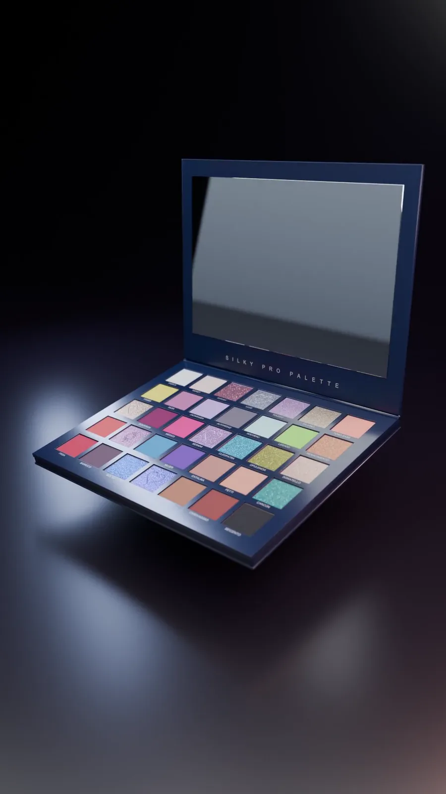
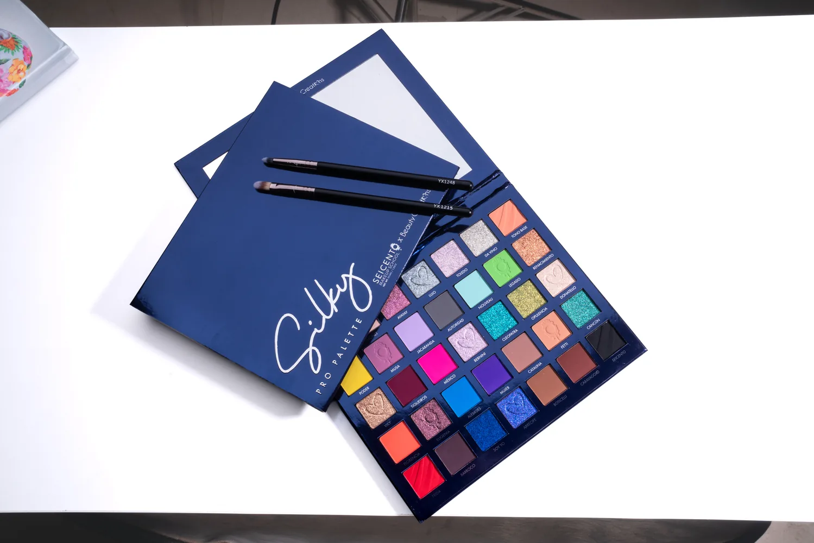

Especialidades
Profundiza en novias, moda editorial, cine y TV, aerógrafo, efectos especiales o peinados. Dale una nueva dirección a tu trabajo.
Explorar especialidades
Escuela de maquillaje profesional · Ciudad de México
Aprende a preparar la piel, trabajar el color y crear looks con intención. Fórmate como makeup artist con práctica, acompañamiento y un portafolio que muestre lo que sabes hacer.
Más de 20,000 egresados
Programas con incorporación a la SEP
Campus Reforma y Coyoacán
Carreras profesionales
Social, novias, editorial o caracterización. Encuentra la carrera que te acerque al maquillaje que quieres crear, desde tus primeras bases hasta técnicas de especialidad.
Amplía tu formación en maquillaje profesional y explora distintas especialidades para desarrollar tu propuesta como artista.
Conocer la carrera 02 / Carrera profesional 12 mesesEmpieza desde los fundamentos y avanza hacia distintas técnicas del maquillaje. Puedes ingresar sin experiencia previa.
Conocer la carrera 03 / Carrera profesional 9 mesesAprende a crear looks para eventos y novias, con atención a la piel, los acabados y el estilo de cada persona.
Conocer la carreraElige tu programa y revisa campus, modalidad, horarios y próximos inicios. Admisiones puede ayudarte a comparar las opciones.
Ver toda la oferta educativaSeicento × Beauty Creations
El color es el punto de partida.
Tu técnica hace la diferencia.
Conoce Silky Pro Palette, la colaboración de Seicento con Beauty Creations. Una invitación a explorar el color, combinar tonos y darle forma a tu estilo.
Imagina tu próximo look. Prueba una combinación. Descubre todo lo que puedes expresar con el maquillaje.

Silky / Pro PaletteAcércate a Silky Pro Palette. Recorre sus tonos y encuentra la combinación que quieras hacer tuya.

Educación continua
Actualiza tu práctica, entra a un campo nuevo o dedica tiempo a esa técnica que quieres dominar.
Profundiza en novias, moda editorial, cine y TV, aerógrafo, efectos especiales o peinados. Dale una nueva dirección a tu trabajo.
Explorar especialidadesEmpieza con Principiante o continúa con Glam Avanzado y Experto. Formación concentrada para practicar según tu nivel.
Explorar intensivosAutomaquillaje, ojos y colorimetría, entre otros temas. Aprende algo concreto que puedas sumar a tu próxima práctica.
Explorar talleresEncuentra grupos y fechas en el calendario de Seicento.
Método Seicento 3D3
En las carreras de maquillaje profesional, el método 3D3 organiza el aprendizaje en tres dimensiones: práctica, técnica y fundamentos. Las clases suman demostración, ejercicio y retroalimentación para convertir el conocimiento en trabajo propio.
La meta es desarrollar criterio y confianza mientras descubres la forma de crear que te distingue.
Conoce nuestro métodoEjercitar, corregir y repetir hasta hacer tuya cada técnica.
Aprender desde demostraciones y acompañamiento docente.
Construir criterio, referencias y una mirada creativa.
La experiencia Seicento
Estudia, practica y empieza a reunir el trabajo que hablará por ti. Estos son algunos de los recursos de la experiencia Seicento.
Un espacio digital para volver a los contenidos y seguir estudiando entre clases.
Acércate a producciones y experiencias donde puedas aplicar lo aprendido y colaborar con otras personas.
Documenta tu evolución y presenta el trabajo que quieres llevar al mundo.
Conoce cómo se ve tu maquillaje frente a la cámara y crea imágenes para presentar tus proyectos.
Accede a descuentos para la comunidad Seicento en productos y herramientas de maquillaje.
Amplía tus referencias con encuentros, talleres y nuevas formas de abordar el maquillaje.
La disponibilidad, los requisitos y los costos de estos recursos dependen del programa. Conoce los beneficios de la carrera que elijas.
Descubre la experienciaMás allá de la formación
Presenta tu portafolio y tus servicios en Pro Beauty, la plataforma de Seicento para conectar el talento de sus maquilladores con personas que buscan un profesional. Da el siguiente paso y conoce cómo participar.
Conocer Pro BeautyMaquillaje en acción
Editorial, color y caracterización: el trabajo se vuelve visible cuando una idea pasa de la mente a las manos.


Comunidad Seicento
Detrás de cada proyecto hay alguien que un día decidió aprender maquillaje. Descubre trabajos finales, prácticas e historias de estudiantes y egresados que han pasado por nuestras aulas.
Conoce sus procesos, sus estilos y las distintas formas de llevar el maquillaje a su vida profesional.
Conoce a nuestra comunidadReconocimiento académico
Dale respaldo a lo que sabes hacer. Conoce los programas incorporados a la SEP y las opciones de evaluación y certificación de Seicento.
Conocer acreditacionesSeicento cuenta con programas incorporados a la Secretaría de Educación Pública.
Centro evaluador de estándares de competencia laboral.
Opción de certificación para Integral de 12 meses y Pro Master de 14 meses, con requisitos académicos específicos.
El reconocimiento, la certificación y sus requisitos varían según el programa.
La comunidad que enseña
Conoce al equipo docente que comparte técnicas, referencias y experiencia profesional con la comunidad Seicento.


Ciudad de México
¿Quieres conocer el espacio antes de elegir tu programa?
Agenda una visitaClase muestra gratuita
Conoce el ambiente de la escuela, acércate a una clase y resuelve tus dudas sobre estudiar maquillaje. Tu primera experiencia puede ayudarte a decidir por dónde empezar.
Quiero vivir la experienciaTe esperamos en Campus Reforma para conocer la escuela, compartir una experiencia de maquillaje y acercarte a nuestra comunidad.
Registra tu interés y recibe la información de la próxima sesión.
Consultar próxima sesiónDesde la comunidad
 Desarrollo profesional
Desarrollo profesionalCómo presentar tu trabajo y por qué un buen portafolio puede abrirte puertas en el maquillaje.
Leer artículo ↗ Historias Seicento
Historias SeicentoConoce su recorrido dentro de la escuela y cómo ha seguido creciendo junto a la comunidad.
Conocer su historia ↗ Técnica y práctica
Técnica y prácticaPreparación de la piel, texturas y fijación para crear looks de larga duración en climas cálidos.
Explorar consejos ↗Antes de empezar
Lo que necesitas saber para elegir tu programa y preparar tu primer día.
Hablar con admisionesSí. La Carrera Integral comienza con los fundamentos y no requiere experiencia previa. También puedes explorar el Intensivo Principiante si buscas un formato concentrado para dar tus primeros pasos.
Maquillaje Social tiene una opción de 6 meses; Social y Novias, de 9 y 12 meses; Integral, Integral + FX e Integral + Editorial, de 12 meses; y Pro Master, de 14 meses. Revisa las opciones de campus y grupo en la oferta de carreras.
Las especialidades de 48 horas te permiten profundizar en áreas como novias, editorial, cine y TV, aerógrafo o FX. También hay intensivos Glam Avanzado y Experto, además de talleres sobre técnicas específicas. Admisiones puede orientarte según lo que ya dominas.
La oferta incluye grupos entre semana y de fin de semana, con horarios matutinos, vespertinos o nocturnos según el programa. Consulta el calendario de próximos inicios para encontrar tu combinación de carrera, campus y horario.
Seicento ofrece opciones en línea, como Social y Novias y algunos talleres. La modalidad depende del programa y del grupo; pregunta por la oferta en línea si no puedes asistir a Reforma o Coyoacán.
Las carreras profesionales siguen el Método Seicento 3D3: 70 % práctica, 20 % técnica y 10 % fundamentos. Combina demostraciones, ejercicios y retroalimentación para que aprendas haciendo y desarrolles criterio al maquillar.
En la Carrera Integral no necesitas reunir todo el kit desde el primer día: los productos y materiales se solicitan de forma gradual. Pide la lista de tu grupo antes de comprar para conocer qué llevar a las primeras clases.
Es la plataforma digital de Seicento para consultar contenidos de apoyo y repasar entre clases. Su acceso y costo dependen del programa; algunas carreras lo contemplan como un cargo adicional. Pide que se detalle en tu cotización.
La experiencia Seicento incluye proyectos, prácticas y recursos como el estudio fotográfico para documentar tu trabajo. Las actividades y condiciones dependen de la carrera. Puedes conocer ejemplos reales en la comunidad de estudiantes y egresados.
Pro Beauty es una plataforma para mostrar tu portafolio y tus servicios a personas que buscan un maquillador. Conoce los requisitos para participar y empieza a dar visibilidad a tu trabajo desde el programa Pro Beauty.
Seicento y Beauty Creations colaboran en Silky Pro Palette. Puedes conocer la paleta y explorar sus tonos en nuestra sección de la colaboración. Escríbenos para recibir información sobre el producto.
La inversión cambia según la carrera, el campus y el grupo. En programas como Integral puedes elegir pago total más inscripción, o comenzar con la primera colegiatura más inscripción. Solicita una cotización con colegiaturas, materiales y cargos adicionales para planear tu inversión.
Seicento cuenta con programas incorporados a la SEP y publica los registros de Realiza Maquillaje Profesional y Maquillaje del Rostro. El reconocimiento depende del programa que curses; puedes revisar la información de incorporación y confirmar qué documento obtendrás al terminar.
La escuela ofrece esta opción para Integral de 12 meses y Pro Master de 14 meses. Entre los requisitos publicados están cursar las materias artísticas, contar con la acreditación SEP, cumplir 90 % de asistencia, promedio mínimo de 9 y los exámenes prácticos. Revisa las condiciones de IUM para conocer el proceso completo.
Sí. Puedes solicitar una visita y conocer la clase muestra gratuita. El Brunch + Masterclass de Campus Reforma te permite acercarte a la experiencia Seicento. Registra tu interés para recibir información de la próxima sesión.
Reforma está en Londres 102, planta alta, colonia Juárez, Cuauhtémoc. Coyoacán está en Av. Miguel Ángel de Quevedo 773, San Francisco, Coyoacán. Ambos están en Ciudad de México. Encuentra teléfonos y recorridos en la sección de campus.
Tu siguiente paso
Cuéntanos qué maquillaje quieres aprender. Te ayudamos a elegir carrera, resolver tus dudas y encontrar tu próximo grupo.